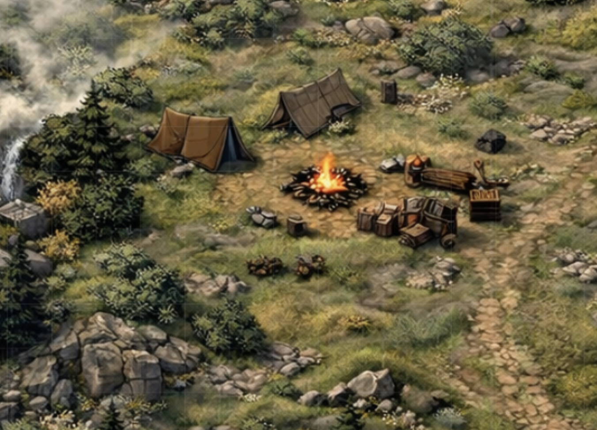
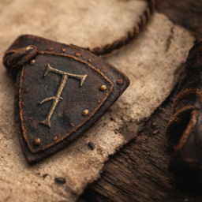
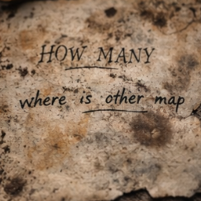
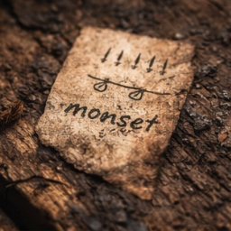
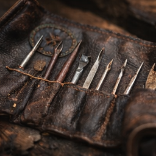
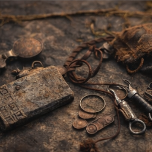
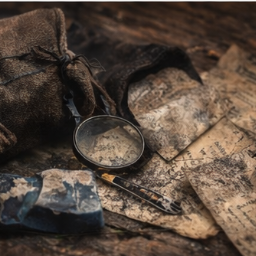
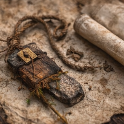

Camp Recovery
Collected from the Scouts' Dead and the Orc Firepit
These items were found after the camp was cleared: some on the bodies, some in a crate of plunder, and some half-fed to the fire. Together they say less about what lies under the hill than about how the scouts worked and how little time they had at the end.
Camp As Found
After the Brotherhood Cleared the Orc Dead
The camp itself remained almost intact when the folio was sorted: two ridge tents still standing, a fire ring collapsing into ash, a rough bench beside stacked plunder crates, and a narrow footpath running back into the grass.
Water sounded somewhere off the left edge of camp. The board with the marked map had been propped near the bench, as if the orcs had been studying it after the scouts were taken.

Fire Ring
Ash stirred recently. Charred paper flecks and one warped fishbone pin were recovered from the edge of the stones.
Bench and Crates
The bench held knife marks, grease, and soot. The crate beneath it kept the satchel and a bundle of stripped personal gear.
Tent Line
One tent still held damp blankets and looted sacks. The other had been used for sorting trophies and questioning prisoners.
Singed
Oilskin Satchel
Split along one seam. Soot packed into the buckle holes. The map and notebook survived only because the inner wrap held against the fire.
Cut
Climbing Rope
Hemp line, one end blackened and one end sliced clean through. Fine grit in the fibers suggests use against raw stone.
Cracked
Spyglass Lens
Wrapped in wool and packed beside charcoal sticks. The brass tube is missing, but the lens says someone expected to watch the road from distance.
Marked
Watch Slate
Two short notations remain clear after rubbing: "voices before dawn" and "sleepers after sunrise." The rest has been smeared by a wet thumb.
Compare: On the Road Below the Tooth.
Recovered
Half-Burned Last Leaf
Torn from the notebook and found in the ash pile. This was likely the page the orcs tried to destroy after taking the satchel.
Pinned
Wire and Fishbone Pins
Crude fasteners used to hold scraps against the camp board. Suggests the scouts kept revising their read of the hill rather than trusting one clean draft.
Questioned
Interrogation Scrap
One scrap in rough Common reads: "How many?" Below it, in the same hard hand, another line: "where is other map". No second map was found.
Reconstructed plate: interrogation slip.
Absent
Missing Companion Sheet
The notebook references a spare sketch meant to be burned if the pair entering the hill failed to return. Whatever became of that sheet, it was not in the camp.
Assigned Effects
The Four Who Made the Folio
The bundles below are reconstructed from initials, pocket contents, and where the items were found among the camp spoils. Not every detail is certain, but the gear separates cleanly into four human adventurers: a cleric, a fighter, a wizard, and the scout who carried the satchel.
Scout
Tamsin Vale
Waxed lockpick roll with one bent pick missing, fingerless climbing glove blackened at the palm, and a brass token shaved thin enough to hide under the tongue.
A page corner in the notebook bears the same hooked T scratched into the satchel clasp.
Matched leaves: Smoke Under the South Face and Moonset. Plates: insignia and tool wrap.
Fighter
Edric Thorne
Notched whetstone, snapped sword-belt frog, and three drilled copper pieces tied on a leather cord, perhaps from prior contracts or dead companions.
His bundle also held the heavier hooks and line weights, suggesting he expected to haul people or gear by force rather than finesse.
Wizard
Ysella Quill
Soot-dusted component purse, blue chalk wrapped in oiled cloth, cracked reading lens, and a tea tin filled with folded paper wards half ruined by damp.
Several shorthand marks in the margins match the same narrow, impatient hand used on the board's caution notes.
Matched leaves: First Sight from the Vale and Broken Brush on the East Scar. Plate: field papers.
Cleric
Brother Caldus Rey
Thumb-smoothed prayer token of plain ash wood, waxed bandage roll, and a linen strip bearing four names written once and then crossed back over in trembling ink.
The strip was folded around dried pine resin and crushed bitterleaf, the sort of field medicine meant to keep a wounded party moving one more hour.
Matched leaves: On the Road Below the Tooth and The Black Water. Plate: field token.
Recovered Plates
Recovered Plates and Personal Effects
These images preserve the most legible scraps and personal effects recovered from the camp. Some were found directly. Others were assembled from matching pieces, notations, and what the orcs failed to destroy.







What This Means
Practical Reading
The prior party did more than glance at the hill. They watched movement, checked multiple approaches, argued over which risks mattered, and then committed to one attempt under cover of darkness.
Still Missing
What the Camp Does Not Answer
The spare map was never recovered, and no surviving scrap makes clear whether the scouts were taken before the smoke attempt, after it, or on their way back out.
What remains here is enough to plan from and enough to grieve from, but not enough to reconstruct the last hour cleanly.